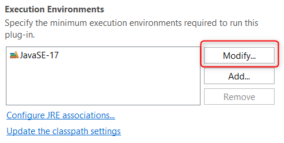
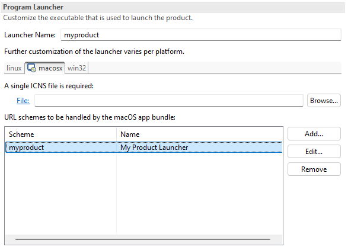

Dialogs, Wizards and Views |
|
Editors |
|
| New Modify button in Execution Environment section |
A new 
The new 'Modify...' button allows you to select a new environment to replace the existing one and update the Java Build Path configuration in one action.
The |
| Handling URL schemes in native macOS launcher |
Since auto-registering link handlers on macOS breaks the code signatures of the .app bundle (more info) an alternative way to declare URL schemes handled by the native launcher was added to the PDE product file editor. 
This information is placed as CFBundleURLTypes entries in the Info.plist file of the app bundle. A corresponding |
API Tools |
|
PDE Compiler |
|